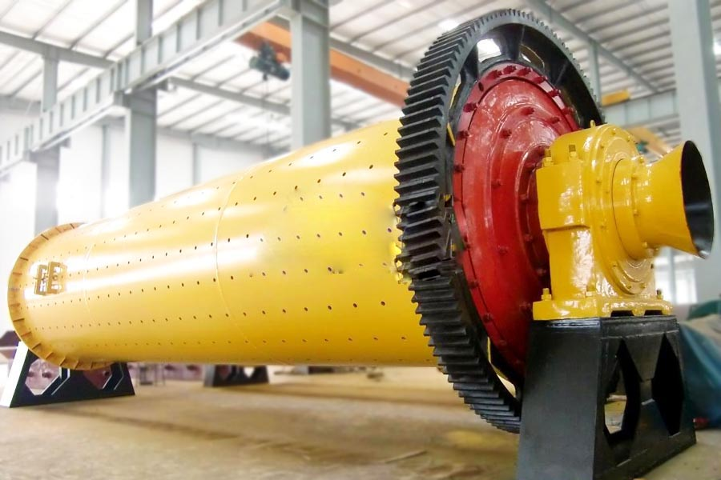

- Home >
- milling equipment >
- used cement ball mill

Construction waste crushing production line

Mobile construction waste crushing station for urban construction waste crushing.
used cement ball mill
used cement ball mill Introduction
Ball Mill changed the original mill structure, so that the body, chassis integration, installation, and can be placed on a flat base, the main bearings double row self-aligning roller bearings, can reduce energy consumption by 30%, improve fine-grained , processing power increased by 15 to 20%. Ball Mill is the material to be broken, and then to smash the key equipment. Ball mill is widely used in cement, silicate products, new building materials, refractory materials, fertilizer, ferrous and nonferrous metal and glass ceramics and other production industries of all kinds of ores and other grind-able materials can be dry or wet grinding.

Ball mill technical parameters
| Specifications Model | Speed of bucket（ r/min ） | Weight of ball (t) | Feed size (mm) | The particle size (mm) | output（ t/h ） | Motor Power (kw) | Weight (t) |
| Ф900×2100 | 36 ～ 38 | 1.5 | 0-15 | 0.075-0.8 | 0.5-1.3 | 18.5 | 4.9 |
| Ф1200×2800 | 36 | 3.5 | 0-20 | 0.075-0.8 | 1.2-3.7 | 37 | 12.5 |
| Ф1500×3500 | 29.7 | 7.5 | 0-20 | 0.075-0.8 | 3.3-8.8 | 75 | 16.5 |
| Ф1830×3500 | 25.4 | 13 | 0-25 | 0.075-0.8 | 4-8 | 130 | 30 |
| Ф2100×3600 | 23.7 | 18 | 0-25 | 0.075-0.8 | 4.5-33 | 180 | 37 |
| Ф2700×3600 | 20.7 | 40 | 0-25 | 0.075-0.8 | 12-75 | 400 | 86 |
Ball Mill Works
This machine is a horizontal cylinder rotating mechanism, outer gear, the two positions, lattice-type ball mill. Material from the feed device evenly into the mill first warehouse into the compound by the air shaft spiral, the warehouse has ladder liner or corrugated liner, built with different specifications steel ball, rotating cylinder produces centrifugal force to the ball a certain height after the fall, have severe impact on the material and abrasive. The material in the first position reached kibble, after single-layer diaphragm plate into the second warehouse, the warehouse lined with flat lining, the steel ball, the material to further grinding. Powder is discharged through the discharge grate plate.

Ball Mill Maintenance:
1, bearing
2, the newly installed tire prone to loosening must always be checked.
3, pay attention to all parts of the machine is working properly.
4, pay attention to check the degree of wear parts wear, and pay attention to replacement of worn parts.
5, put the active device chassis plane should avoid activities out dust and other matter bearing on the chassis can not move the machine does not meet the crushed material, so as to cause a serious accident.
6, bearing temperature rise, should immediately stop check the reason to eliminate them.
7, the rotation of the gear in operation should be immediately stopped if the impact of sound check and eliminate
Leave Me A Message, Now
If you have any questions regarding equipment prices, production line configuration or other problems, you can send a message to us, we will contact you soon.